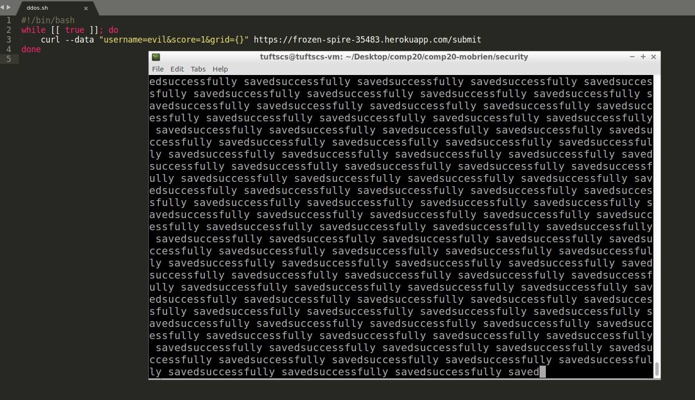

by Meghan O'Brien
The product I am inspecting is a game server that stores and displays the high scores for a 2048 game. My goal is to find and take advantage of security vulnerabilities in the program.
After reading about different types of vulnerabilities and how to exploit them, I read through the code I was given to see if I could find any obvious poor programming practice or opportunities for security issues. The only tool that I used was curl, which I used to submit data to the server.
Due to a vulnerability that put no restrictions on user input, I was able to enter script to create an alert pop-up upon opening the page, instead of entering a username. Because the program was originally unfinished and not fully functional, I could not put malicious input in the query string (though the original program already posed the same security risk that would have been introduced by a malicious query). I also found that the original code placed no limit on the number of requests that could be made, so I attempted to shut down the server by flooding it with requests, but found that it would take too long. No other privacy issues were found.
This was allowed on the submit page, because I was able to enter script instead of text when entering data through curl.
This issue is fairly severe, because, with no restriction on user input, the user could have sent very malicious code into the program and caused a lot of damage. Cross-site scripting is also dangerous because it introduces this malicious content to all users who visit the page, which means the effect could be widespread.
I found this problem by noticing that there was no code to edit or restrict the username, that is taken in directly from the user and sent into the database. I tested the problem by entering script as the username when submitting data with curl.
Here is a screenshot of the result:
This problem can be avoided in the future by adding restrictions on user input, such as code that removes extraneous characters from input or limits the character length of the input. The following line of code could have accomplished this:
username.replace(/[^\w\s]/gi, ' ');
I was actually not able to inject code using the query string, but this is not a result of good programming practice or preventative measures. It is simply because the original program was unfinished, and so the portion of the assignment that takes in a query string (for scores.json) was not written. Therefore, no input in the query string would have had an effect on the game server. Here is a screenshot of the scores.json route for reference:

However, this is still a security vulnerability because, without knowing (and therefore without entering) any of the usernames, I can see all of the data associated with every entry. The idea behind injection would be that I could say username[$ne]=Meghan and find all usernames not equal to "Meghan," which therefore would show me more data than the programmer intended. While I cannot use the query string to accomplish this, the default behavior of this program is to show all of the entries no matter what is entered as the query, so this is still a vulnerability.
I attempted an attack by flooding the server with requests, but found that it would take way too long to actually shut down the server. While I was not able to actually completely crash the server, it is still a security risk that there appears to be no limit to the number of requests that can be sent to the server, which means that, given some patience, I could have broken the server by infinitely sending requests. Here is a screenshot of the shell script that I wrote, with the terminal in the output showing many requests being received:

This kind of vulnerability can be fixed by placing a limit on the number of requests that can be made, so that the server cannot be shut down by flooding it with requests.
I was not able to find many security issues, because many of the vulnerabilities that I learned how to take advantage of did not apply to this program. There are ways to bypass restrictions on user input and circumvent security measures, but no such measures were in place to begin with, so these actions were not relevant. Without making use of the query string, I could not conduct a SQL injection via query string, and there were also no hidden fields used that could have been manipulated. I attempted a DDoS attack, but realized that the number of requests I needed to make to flood the system was larger than I was willing to wait for. I was able to use cross-site scripting to send unchecked code into the program, which exposes all users to my manipulation.
I used the class notes to complete this assignment, and copied the line of code to remove extra characters from the nodemongoapp example on the COMP20 github. I also consulted with Jason Payne about different ways to conduct attacks.